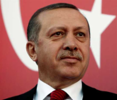
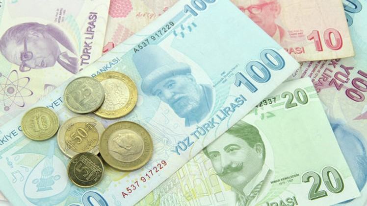
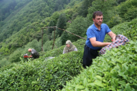
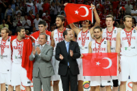

Turkey is an intercontinental state located mainly in West Asia
Turkey's current administration headed by president Recep Tayyip Erdoğan of the AKP has enacted measures to increase the influence of Islam, and undermine Kemalist policies and freedom of the press .
The official language is Turkish, which is the most widely spoken Turkic language in the world .
The currency in Turkey is Liras :
Cotton, tea, olives, grapes, citrus fruits, vegetables, grains and barley are the most important agricultural crops in the country. Turkey is one of the largest producers of hazelnuts in the world.
The most popular sport in Turkey is football . Galatasaray won the UEFA Cup and UEFA Super Cup in 2000.
| Word | How to pronounce ? | Meaning |
|---|---|---|
| Selam | Salam | Hello |
| Günaydın | Qonieden | Good Morning |
| Nasılsın ? | Nasisin? | How are you? |
| Hoşçakal | Hoshakal | Bye |
| Lütfen | Lutfan | Please |
| İyi akşamlar | Ayy akshm lar | Good Evening |
| Evet/Hayır | Avait/Hayir | Yes/No |
info@gmail.com
+966 5025247846